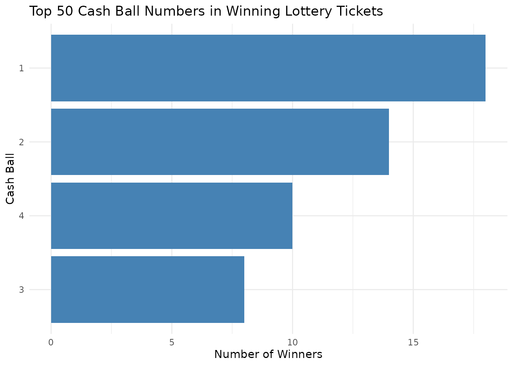

Getting Started with nysOpenData
Christian Martinez
Source:vignettes/getting-started.Rmd
getting-started.Rmd
knitr::opts_chunk$set(warning = FALSE, message = FALSE)
library(nysOpenData)
library(ggplot2)
library(dplyr)
#>
#> Attaching package: 'dplyr'
#> The following objects are masked from 'package:stats':
#>
#> filter, lag
#> The following objects are masked from 'package:base':
#>
#> intersect, setdiff, setequal, unionIntroduction
Welcome to the nysOpenData package, a R package
dedicated to helping R users connect to the NY State Data Portal!
The nysOpenData package provides a streamlined interface
for accessing New York State’s vast open data resources. It connects
directly to the NY State Open Data Portal, helping users bridge the gap
between raw APIs and tidy data analysis. It does this in two ways:
The nys_pull_dataset() function
The primary way to pull data in this package is the
nys_pull_dataset() function, which works in tandem with
nys_list_datasets(). You do not need to know anything about
API keys or authentication.
The first step would be to call the nys_list_datasets()
to see what datasets are in the list and available to use in the
nys_pull_dataset() function. This provides information for
thousands of datasets found on the portal.
nys_list_datasets() |> head()
#> # A tibble: 6 × 18
#> key uid title accessLevel landingPage issued `@type` modified keyword
#> <chr> <chr> <chr> <chr> <chr> <chr> <chr> <chr> <list>
#> 1 state_of_… 22ew… Stat… public https://da… 2016-… dcat:D… 2019-06… <chr>
#> 2 open_ny_q… 22ie… Open… public https://da… 2022-… dcat:D… 2025-06… <chr>
#> 3 lobbying_… 238s… Lobb… public https://da… 2018-… dcat:D… 2023-07… <chr>
#> 4 mta_subwa… 23fs… MTA … public https://da… 2025-… dcat:D… 2026-03… <chr>
#> 5 alternati… 23ry… Alte… public https://da… 2023-… dcat:D… 2026-03… <NULL>
#> 6 nys_thruw… 23v4… NYS … public https://da… 2017-… dcat:D… 2020-01… <chr>
#> # ℹ 9 more variables: identifier <chr>, description <chr>, distribution <list>,
#> # theme <list>, `contactPoint.@type` <chr>, contactPoint.fn <chr>,
#> # contactPoint.hasEmail <chr>, `publisher.@type` <chr>, publisher.name <chr>The output includes columns such as the dataset title, description,
and link to the source. The most important pieces are the key
and uid. You need either in order to
use the nys_pull_dataset() function. You can put
either the key value or uid value into the
dataset = filter inside of
nys_pull_dataset().
For instance, if we want to pull the the dataset
Lottery Cash 4 Life Winning Numbers: Beginning 2014, we can
use either of the methods below:
nys_cash_for_life_uid <- nys_pull_dataset(
dataset = "kwxv-fwze", limit = 2)
nys_cash_for_life_key <- nys_pull_dataset(
dataset = "lottery_cash_4_life_winning_numbers_beginning_2014", limit = 2)No matter if we put the uid or the key as
the value for dataset =, we successfully get the data!
The nys_any_dataset() function
The easiest workflow is to use nys_list_datasets()
together with nys_pull_dataset(). However, there are ample
datasets on the portal, with new ones being added all the time, and so
the list does not have all of the datasets.
In the event that you have a particular dataset you want to use in R
that is not in the list, you can use the nys_any_dataset().
The only requirement is the dataset’s API endpoint (a URL provided by
the nys Open Data portal). Here are the steps to get it:
- On the NY State Open Data Portal, go to the dataset you want to work with.
- Click on “Export” (next to the actions button on the right hand side).
- Click on “API Endpoint”.
- Click on “SODA2” for “Version”.
- Copy the API Endpoint.
Below is an example of how to use the nys_any_dataset()
once the API endpoint has been discovered, that will pull the same data
as the nys_pull_dataset() example:
nys_lottery_data <- nys_any_dataset(json_link = "https://data.ny.gov/api/v3/views/kwxv-fwze/query.json", limit = 2)Rule of Thumb
While both functions provide access to NY State Open Data, they serve slightly different purposes.
In general:
- Use
nys_pull_dataset()when the dataset is available innys_list_datasets() - Use
nys_any_dataset()when working with datasets outside the catalog
Together, these functions allow users to either quickly access the datasets or flexibly query any dataset available on the nys Open Data portal.
Real World Example
Every day, New York State hosts the Cash 4 Life
lottery, and the dates and winning numbers can be found
here. In R, the nysOpenData package can be used to pull
this data directly.
Let’s filter the dataset to only include rows where the
cash_ball is “04”. The nys_pull_dataset()
function can filter based off any of the columns in the dataset. To
filter, we add filters = list() and put whatever filters we
would like inside. From our colnames call before, we know
that there is a column called “cash_ball” which we can use to accomplish
this.
lottery_04 <- nys_pull_dataset(dataset = "kwxv-fwze",limit = 2, filters = list(cash_ball = "04"))
lottery_04
#> # A tibble: 2 × 3
#> draw_date winning_numbers cash_ball
#> <dttm> <chr> <dbl>
#> 1 2026-02-21 00:00:00 20 25 30 52 55 4
#> 2 2026-02-17 00:00:00 11 22 32 56 60 4
# Checking to see the filtering worked
lottery_04 |>
distinct(cash_ball)
#> # A tibble: 1 × 1
#> cash_ball
#> <dbl>
#> 1 4Success! From calling the lottery_04 dataset we see
there are only 2 rows of data, and from the distinct() call
we see the only cash_ball featured in our dataset is
“04.”
We can also add more than one criteria when filtering.
lottery_01_02 <- nys_pull_dataset(dataset = "kwxv-fwze",limit = 2, filters = list(cash_ball = c("01","02")))
lottery_01_02
#> # A tibble: 2 × 3
#> draw_date winning_numbers cash_ball
#> <dttm> <chr> <dbl>
#> 1 2026-02-20 00:00:00 02 28 49 50 56 1
#> 2 2026-02-18 00:00:00 03 28 38 40 49 1We successfully filtered for the latest two rows where the winning number was either “01” or “02”
Mini analysis
Now that we have successfully pulled the data and have it in R, let’s
do a mini analysis on using the cash_ball column, to figure
out what are the top cash_ball winners.
To do this, we will create a bar graph of the Cash Ball frequencies.
# Visualizing the distribution, ordered by frequency
lottery <- nys_pull_dataset(dataset = "kwxv-fwze",limit = 50)
lottery |>
count(cash_ball) |>
ggplot(aes(
x = n,
y = reorder(cash_ball, n)
)) +
geom_col(fill = "steelblue") +
theme_minimal() +
labs(
title = "Top 50 Cash Ball Numbers in Winning Lottery Tickets",
x = "Number of Winners",
y = "Cash Ball"
)
Frequency of Cash Ball numbers among recent New York Cash 4 Life lottery winning tickets. Bars are ordered from least to most frequent to highlight the distribution of outcomes.
This graph shows us not only which cash balls have won, but how many of each have won.
Summary
The nysOpenData package serves as a robust interface for
the NY State Open Data portal, streamlining the path from raw city APIs
to actionable insights. By abstracting the complexities of data
acquisition—such as pagination, type-casting, and complex filtering—it
allows users to focus on analysis rather than data engineering.
As demonstrated in this vignette, the package provides a seamless workflow for targeted data retrieval, automated filtering, and rapid visualization.
How to Cite
If you use this package for research or educational purposes, please cite it as follows:
Martinez C (2026). nysOpenData: Convenient Access to nys Open Data API Endpoints. R package version 0.1.0, https://martinezc1.github.io/nysOpenData/.